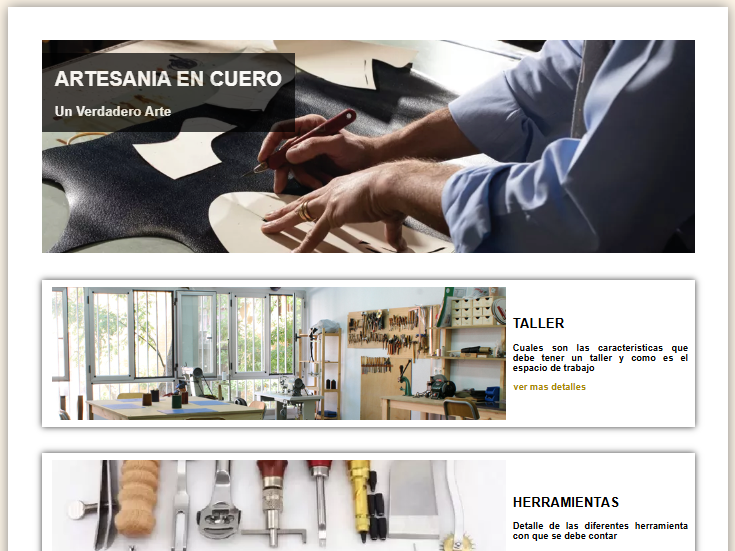
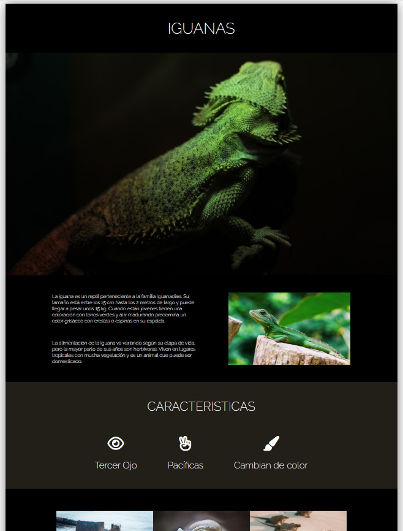
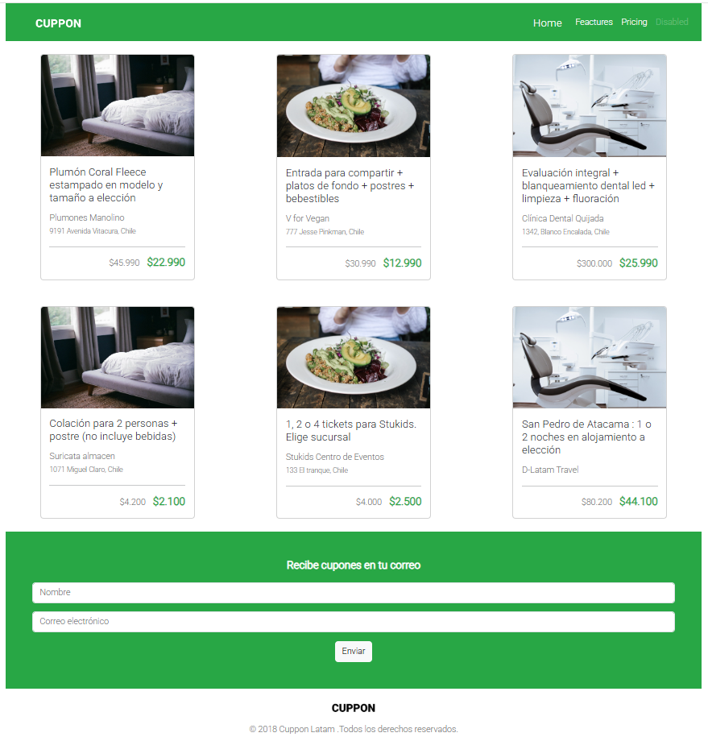
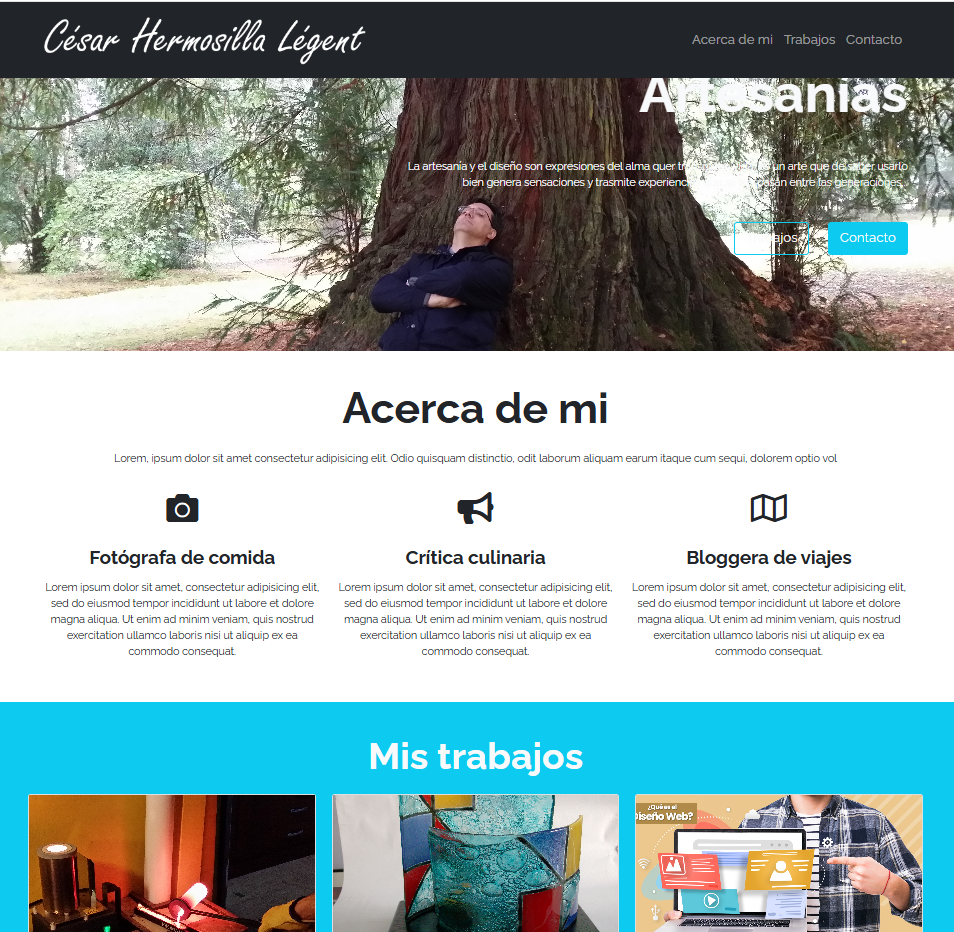

| landing page |  | Confección de una Pagina Unica explicativa |
| Iguana Page |  | Desarrollo de la pagina web segun un diseño entregado |
| Cuppon |  | Replicar una pagina prediseñana Usando Bootstrap |
| Fork y Clon |  | Hacer un clon de una pagina que se obtiene de Gihup por medio de fork, hacerle cambios y suborla a espacio propio de Github |